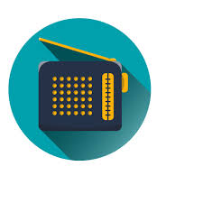

  <div class="header">
    <ion-back-button defaultHref="/tabs/autres" text=" "></ion-back-button>
      <h1>FM</h1>
      
  </div>
  
  

<ion-content>

  <ion-content [fullscreen]="true">
    <div id="container">
      <button class="Ajouter" (click)="openIonModal()">Ajouter +</button>
    </div>
  </ion-content>

  <ion-list class="content">
    <ion-item *ngFor="let radio of radios">
      <ion-avatar slot="start">
        
      </ion-avatar>
      <ion-label >
        {{radio.nom}} <br>
        {{radio.emplacement}}
      </ion-label>
      <ion-label  class="font-size: 30px" style="margin-left: 10px; "> <!-- Ajoutez une marge à gauche -->
        <div  style="background-color:rgb(124, 185, 109); border-radius: 20px; width: 50px; justify-content: flex-start; color: #fff;">
        {{radio.frequence}}
      </div>
      </ion-label>
      <ion-label>
        <ion-icon name="create" style="margin-right: 5%;"  routerLink="update/{{radio.id}}" ></ion-icon> <!-- Icône de modification -->
        <ion-icon name="trash" style="color: red;" (click)="supprimer(radio)"></ion-icon> <!-- Icône de suppression -->
      </ion-label>
    </ion-item>
  </ion-list>
  
  

</ion-content>
